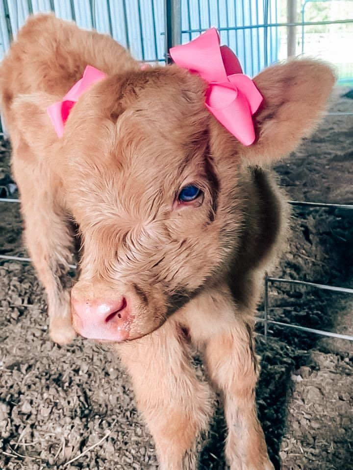
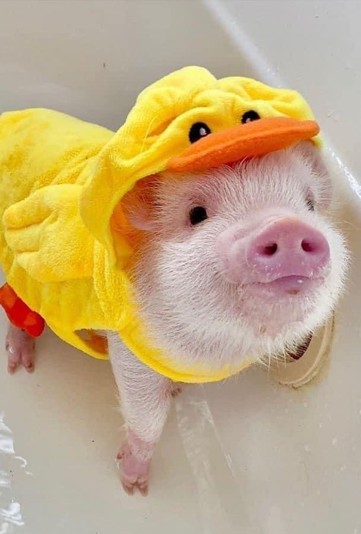

Essa é e uma página,Zoo explora espécies e suas adaptações, promovendo a conservação e a importância da biodiversidade.
Aqui vou escrever sobre a vaca As vacas no Estados Unidos, especialmente a raça Holandesa, são conhecidas pela produção de leite de alta qualidade. Além disso, raças como Angus e Hereford são importantes na produção de carne, refletindo a disversidade da pecuária no país.
Sobre o porco Os mini porcos, ou porcos de estimação, são animais pequenos e amiguáveis, populares nos Esrados Unidos. Eles geralmente pesam entre 30 e 150 quilos e são conhecidos por sua inteligência e personalidade brincalhona.Esses porcos exigem cuidados especiais, incluindo uma dieta adequada e espçao suficiente para se exercitar.